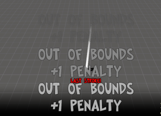
Good usage of material:
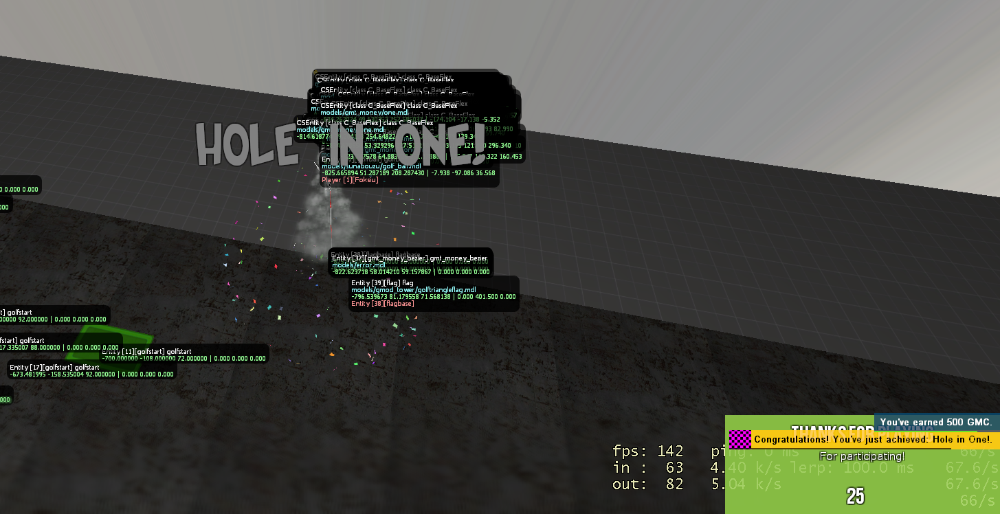
list:
SafeMaterials = {
-- Materials that are safe for the ball to be on
"tools/toolsnodraw",
"golf/grass_in",
"golf/sand",
"golf/puttputt_sand",
"golf/puttputt_grass",
"dev/dev_measuregeneric01b",
"gmod_tower/mrsaturnvalley/saturn_grass",
"gmod_tower/minigolf/green",
"wood/milbeams002",
"maps/gmt_minigolf_02/nature/blendrockslime01a_wvt_patch",
"gmod_tower/minigolf/sand",
"gmod_tower/minigolf/zen_green",
"stone/stonewall033a",
"garden/gravel_waves_single",
"garden/gravel_waves",
"maps/gmt_minigolf_zen/concrete/blendbunk_conc01_wvt_patch",
"gmod_tower/minigolf/snowfall/snowfall_mainsnow",
"gmod_tower/minigolf/snowfall/snowfall_mainice",
"gmod_tower/minigolf/snowfall/snowfall_iceslide",
"gmt_minigolf_moon/grass_in_blue",
"metal/metalhull003a",
"metal/metalfence007a",
"gmod_tower/minigolf/forest/green_checkers",
"cs_havana/woodm",
"gmod_tower/minigolf/puttputt_wood_in",
"gmt_minigolf_desert/desert_brick_edge",
"gmt_minigolf_desert/desert_floor_tile",
"gmt_minigolf_desert/desert_puttputt_start",
"gmt_minigolf_desert/desert_stone"
}
SandMaterials = {
"gmod_tower/minigolf/sand",
"golf/sand",
"garden/gravel_waves_single",
"garden/gravel_waves"
}
IceMaterials = {
"gmod_tower/minigolf/snowfall/snowfall_mainice",
"gmod_tower/minigolf/snowfall/snowfall_iceslide"
}
First, create a new map and name it
gmt_minigolf_ANYTHING where ANYTHING is the map name you desire
Make a small box, in which you want to hold the player
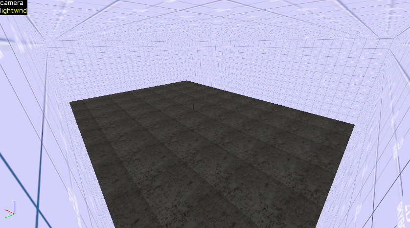
1. Making holes
Now, place down new entity which will be prop_dynamic, and set it to the same model (
models/sunabouzu/golf_hole02.mdl) as shown on picture. You want to make sure its in the ground, so we can use it later to make a perfect hole
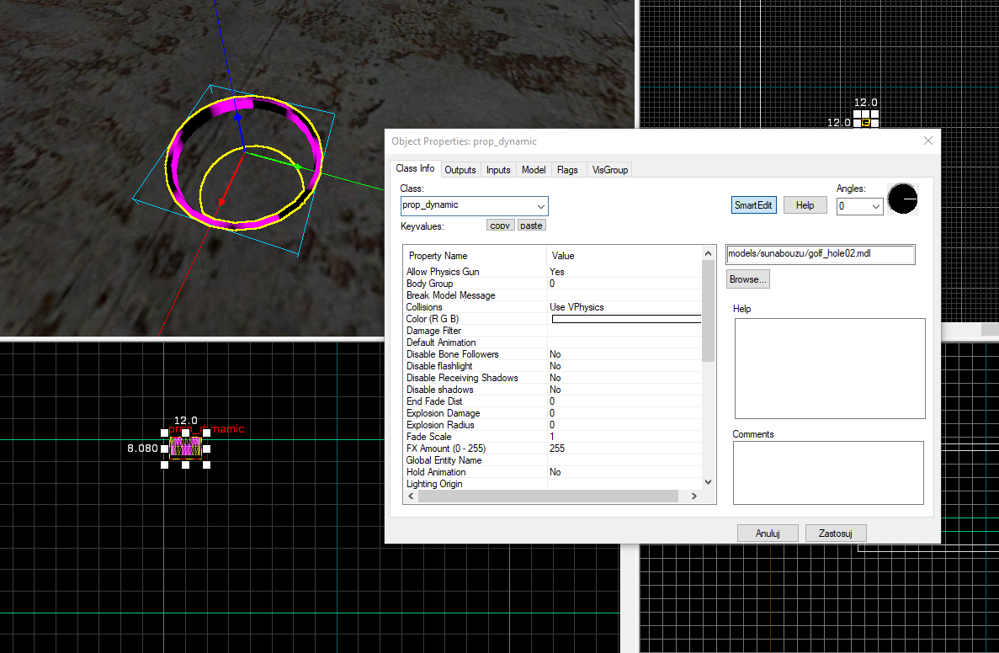
Now, make a cylinder shaped block, and place it down the hole. Make sure it kinda matches up with the hole. Hit the carve button while the cylinder is selected.
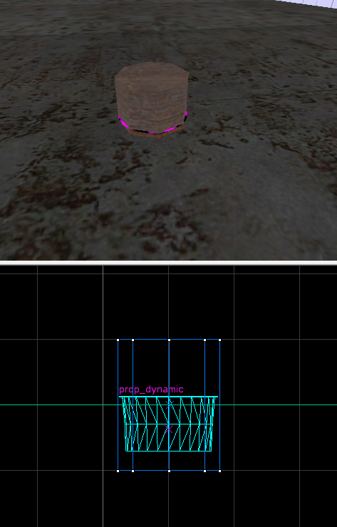
You should end up with something like this:
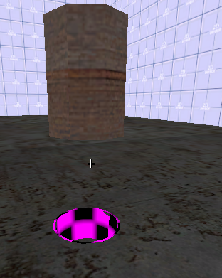
A perfect hole, who doesn't love that look. Now, select the brush tool, pop down a trigger in that hole. Press
ctrl + t to bring up the object properties menu, and set the class to golfhole
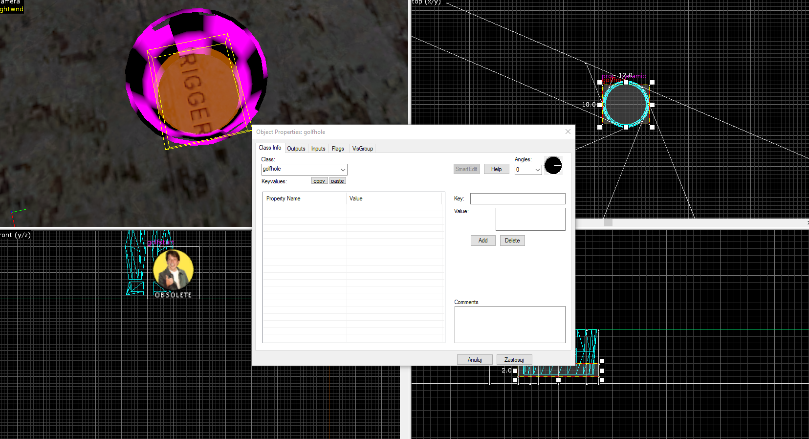
2. Making the map actually playable
So, the minimal shit your map needs is a 4 entities. They are named:info_player_start, golfwaiting, golfhole, golfstart
In the room you just made, place down
golfwaiting - this room will be the "waiting for players to join" room where you practice putts
info_player_start - Spawn for players
golfwaiting - Entity that defines the room where people will practice putts
golfhole - Trigger that upon touching with a minigolf ball will fire
golfstart - Defines the hole. It's name, amount needed for par, and hole number
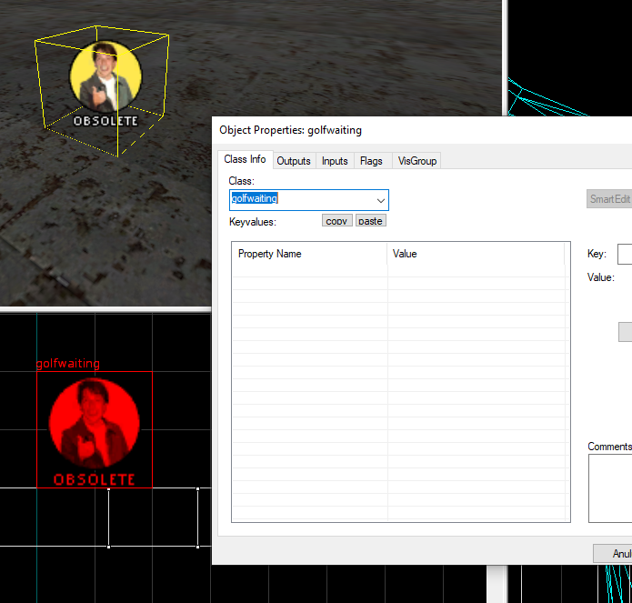
Now make a second room, it will be a hole 1 course
Place down
info_player_start Warning: only place one. and place down golfstart
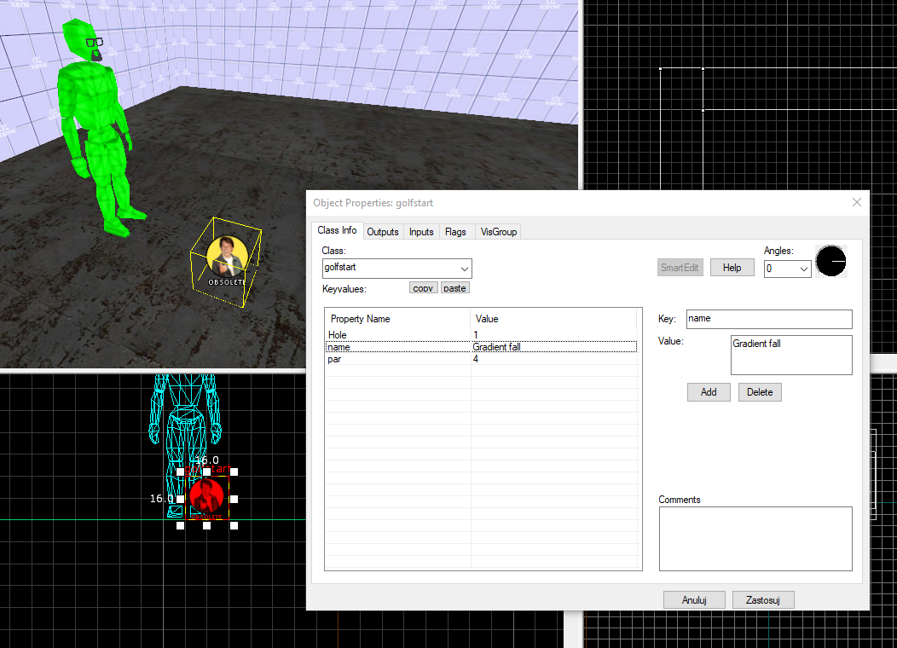
Repeat the steps from the waiting room, but dont place down
golfwaiting
Once you're done making the areas, decorating them etc, compile your map and run it
3. Setting the position of holes
Once you loaded the map, you want to position yourself over a hole with noclip, and typegetpos into console
The output should look something like this: setpos -374.638000 992.229004 82.795265;setang 88.538010 111.624016 0.000000
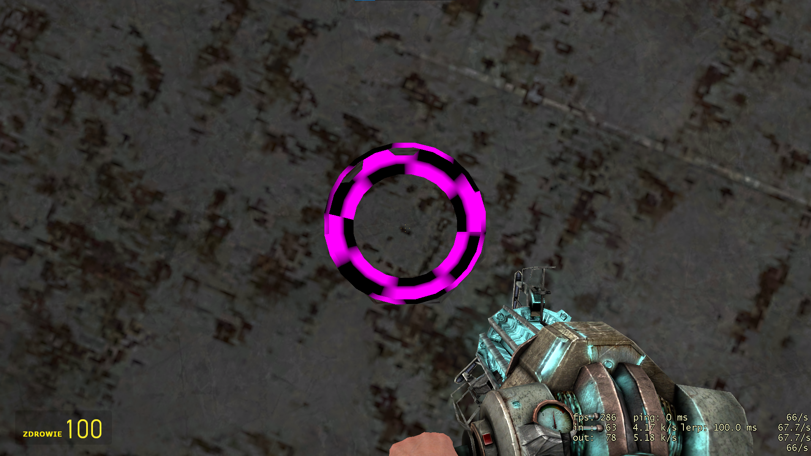
Now, go back to hammer, select the hole you were at and click it. Create a new key called "origin" with the setpos value. Example:
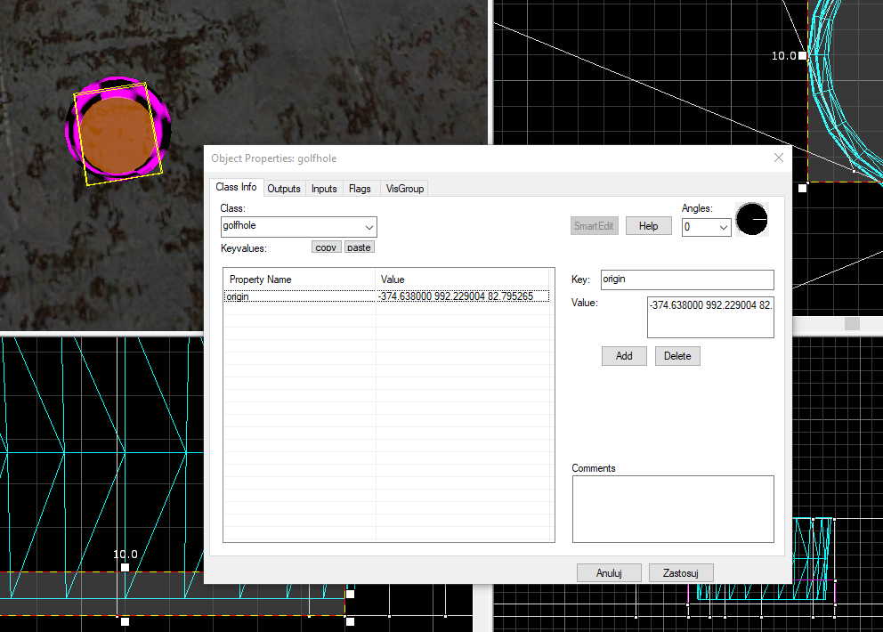
Do this for every other hole in the map
If you wont do this step, flags will appear in weird places
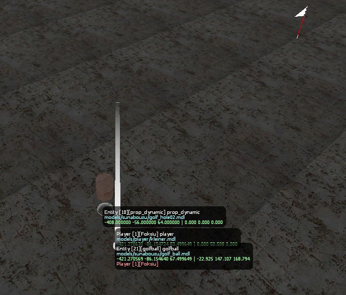
This is how flags should appear if you repeat the process with every other hole:
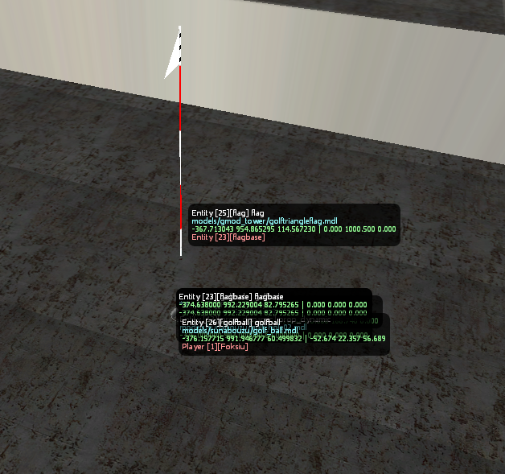